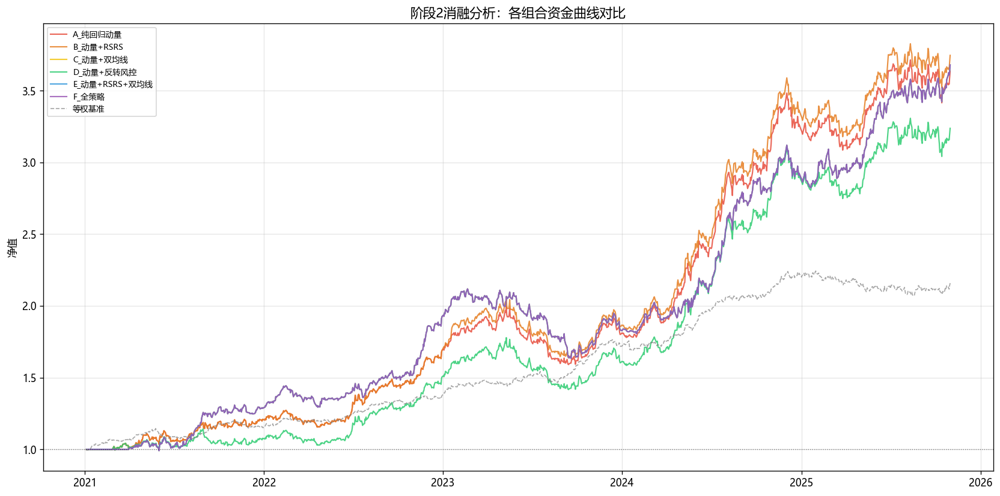
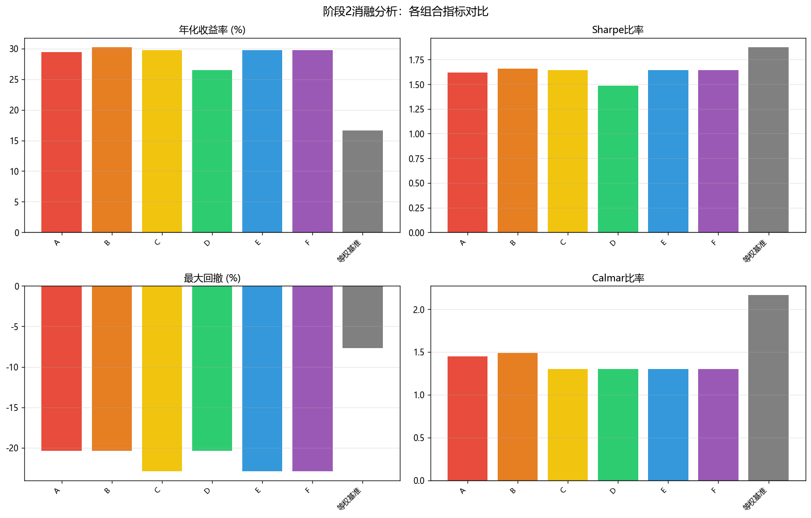
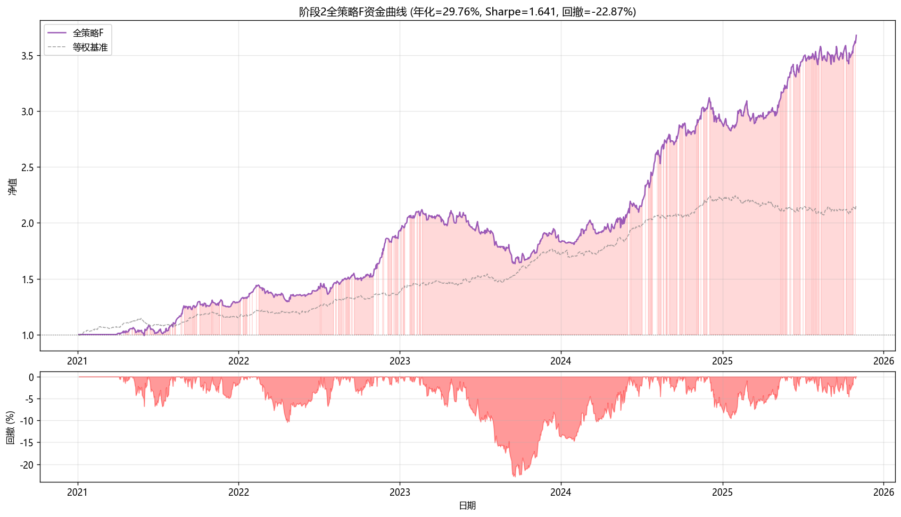

生成时间: 2026-06-29 00:05:16
| 组合 | 年化收益 | 年化波动 | Sharpe | 最大回撤 | Calmar | 胜率 | 空仓占比 | 总换手 |
|---|---|---|---|---|---|---|---|---|
| A_纯回归动量 | 29.46% | 15.45% | 1.620 | -20.35% | 1.448 | 53.1% | 3.2% | 38.0 |
| B_动量+RSRS | 30.24% | 15.47% | 1.656 | -20.35% | 1.486 | 53.2% | 3.2% | 37.0 |
| C_动量+双均线 | 29.76% | 15.38% | 1.641 | -22.87% | 1.302 | 53.3% | 5.0% | 37.0 |
| D_动量+反转风控 | 26.49% | 15.27% | 1.485 | -20.35% | 1.302 | 53.0% | 3.2% | 39.0 |
| E_动量+RSRS+双均线 | 29.76% | 15.38% | 1.641 | -22.87% | 1.302 | 53.3% | 5.0% | 37.0 |
| F_全策略 | 29.76% | 15.38% | 1.641 | -22.87% | 1.302 | 53.3% | 5.0% | 37.0 |
| 等权基准 | 16.64% | 7.29% | 1.875 | -7.69% | 2.163 | 56.0% | 0.0% | — |

说明：6种组合+等权基准的资金曲线，紫色为全策略F。

说明：4个子图分别为年化收益、Sharpe、最大回撤、Calmar。灰色为等权基准。

说明：上图紫色为全策略F净值，灰虚线为等权基准，红色阴影为回撤区间；下图为回撤曲线。
| ETF | 持仓天数占比(%) |
|---|---|
| ETF-LV | 25.8 |
| ETF-LG | 25.6 |
| ETF-SV | 5.0 |
| ETF-SG | 26.0 |
| ETF-CY | 0.0 |
| ETF-TE | 10.5 |
| ETF-CO | 27.5 |
| ETF-ME | 24.0 |
| ETF-BO | 16.2 |
| ETF-OV | 15.6 |
说明：全策略F各ETF持仓天数占比，空仓占比=5.0%。